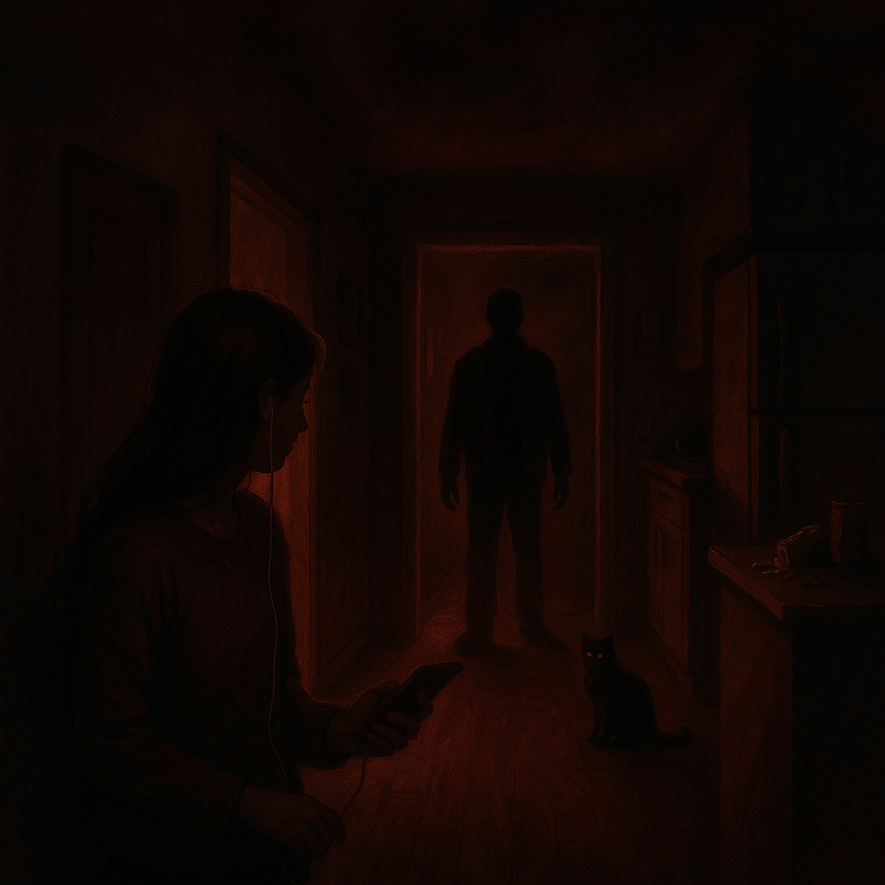

The story starts with a girl sitting in her room, studying quietly and casually having snacks.
Suddenly, she hears the sound of a bottle falling in the kitchen. After hearing the noise her heart skips a beat and she feels a little scared but decides to go check.
She calls out for her mom, and expects a response, but there is still silence. She slowly walks out of her room and looks around the quiet, dark house, feeling nervous.
The tension builds as she moves through each hallway, until she turns a corner and spots her playful cat. Relief replaces her fear, and she returns to warmth and comfort.